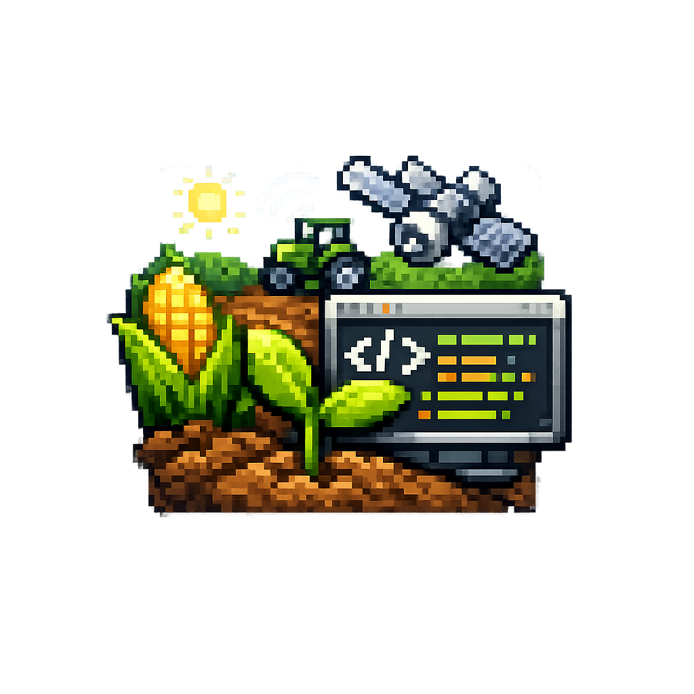

Sobre a Origem
A programação na agronomia surgiu da necessidade de automatizar processos agrícolas e analisar grandes volumes de dados. Atualmente, ela é utilizada para monitoramento de lavouras, análise climática, controle de irrigação e aumento da produtividade.
Aplicações da Programação
- Monitoramento de lavouras com drones.
- Análise de dados climáticos.
- Sistemas de irrigação automática.
- Controle de pragas com inteligência artificial.
- Gestão de máquinas agrícolas.
Benefícios para o Campo
A tecnologia ajuda a reduzir custos, aumentar a produtividade e tornar a agricultura mais sustentável.